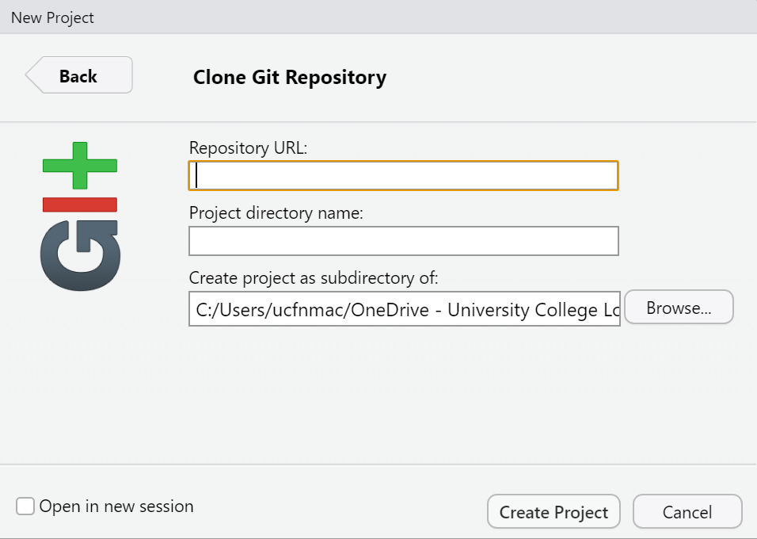
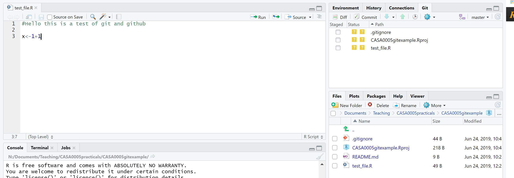

The homework task is presented at the bottom of this practical.
2.1 Learning outcomes
By the end of this practical you should be able to:
Load, manipulate and interpret raster layers
Explain the use of and differences between Git and GitHub
Create reproducible and open R code
Produce RMarkdown documents that explain code and analysis
2.2 RMarkdown / Quarto
Before we start the practical content we should now be moving to a type of markdown file as opposed to R scripts. This could be either a Quarto file or R Markdown. Both let you can show code, explanations and results within the same document.
Often it could be very hard to reproduce results owing to a lack of information in the methodology / user guides or walk through not matching up with the latest version of software. Think back to a time where you had to use software and consult a massive user guide in how to use it. Markdown is a big improvement as it puts all of the information in the same document, which can then be converted into a range of different formats — html for webpages, word documents, PDFs, blogs, books — virtually everything!
RMarkdown is dependent on R, however the recent development of Quarto has removed the reliance on R being multilingual with R, Python, Javascript and Julia. Quarto is separate software but (i think) is now installed by defaulted with R.
In your Rproject go, File > New File > select R Markdown or Quarto.
In RMarkdown you will see a “knit” option at the bar just above your code. In Quarto this will be “render”. These will run all code in the entire document and allow us to export our code to other formats - such as html or pdf.
You must put your code in a code chunk and these can be added with C+ in the top tool bar. We can control code chunks in different ways….
echo=FALSE - code does not appear in the final rendered document but the output does
message=FALSE - messages don’t appear
warning=FALSE - warnings don’t appear
eval=FALSE - the code in that chunk does not run.
Heading levels are denoted by #
e.g. # = level 1, ## level 2 and so on. In the bottom left of your code you will see an orange # which will let you navigate between your headings.
Start today with an RMarkdown or Quarto file. If you select the latter you can also make use of the visual editor which will make the Quarto file look like a word processor (top left of the document).
2.3 Intro
Today we are going to take some pixel level data (raster data) > summarise it per polygon (e.g. country or district) > share out code with the world on GitHub.
2.4 Data
We will use data from the Malaria Atlas project - specifically count of deaths from Plasmodium falciparum (malaria). We’ll also get some boundary data from the Humanitarian Data Exchange. Note, we could use the Database of Global Administrative Areas - (GADM), however we would need to do some advanced data wrangling when joining the non-spatial data to the spatial data.
I will use Nigeria as an example, but feel free to select another country.
# check the type of columnDatatypelist <- population %>%summarise_all(class) %>%pivot_longer(everything(), names_to="All_variables", values_to="Variable_class")Datatypelist
# A tibble: 78 × 2
All_variables Variable_class
<chr> <chr>
1 adm0_name character
2 adm0_pcode character
3 adm1_name character
4 adm1_pcode character
5 adm2_name character
6 adm2_pcode character
7 f_tl numeric
8 m_tl numeric
9 t_tl numeric
10 f_00_04 numeric
# … with 68 more rows
Raster packages in R have and are still evolving rapidly. In 2023 some key packages will retired like maptools, rgdal and rgeos as their maintainer, Roger Bivand retired. The old raster used sp objects (the precursor to sf) for vector data and also the rgdal package - the Geospatial Data Abstraction Library (GDAL) for reading, writing and converting between spatial formats.
The terra package (2020) is somewhat mixed with raster, however the retiring packages are only needed by raster, with the terra package replacing raster. Terra is much faster than raster as datasets that can’t be loaded into RAM are stored on disc and when loaded doesn’t read the values. Then when computations occur the do so in chunks. Terra is very well documented and the functions are very similar to raster - https://rspatial.org/terra/pkg/index.html
Load in the raster layer for 2020
library(terra)
terra 1.6.17
Attaching package: 'terra'
The following object is masked from 'package:janitor':
crosstab
The following object is masked from 'package:tidyr':
extract
malaria <-rast("prac2_data/202206_Global_Pf_Mortality_Count_2000/202206_Global_Pf_Mortality_Count_2020.tif")# check the raster infomalaria
class : SpatRaster
dimensions : 3480, 8640, 1 (nrow, ncol, nlyr)
resolution : 0.04166667, 0.04166667 (x, y)
extent : -180, 180, -60, 85 (xmin, xmax, ymin, ymax)
coord. ref. : lon/lat WGS 84 (EPSG:4326)
source : 202206_Global_Pf_Mortality_Count_2020.tif
name : 202206_Global_Pf_Mortality_Count_2020
min value : 0.0000
max value : 481.9917
We are going to use local government areas. According to Wikipedia, in Nigeria:
The federal government’s role is mostly limited to coordinating the affairs of the university teaching hospitals, Federal Medical Centres (tertiary healthcare) while the state government manages the various general hospitals (secondary healthcare) and the local government focuses on dispensaries (primary healthcare),[4] which are regulated by the federal government through the NPHCDA.
Despite this let’s calculate which local government area has the most cases…
library(sf)
Linking to GEOS 3.9.1, GDAL 3.4.3, PROJ 7.2.1; sf_use_s2() is TRUE
Reading layer `nga_admbnda_adm2_osgof_20190417' from data source
`C:\Users\Andy\OneDrive - University College London\Teaching\Guest\Oxford_24\Spatial analysis of public health data\prac2_data\nga_adm_osgof_20190417\nga_admbnda_adm2_osgof_20190417.shp'
using driver `ESRI Shapefile'
Simple feature collection with 774 features and 16 fields
Geometry type: MULTIPOLYGON
Dimension: XY
Bounding box: xmin: 2.668534 ymin: 4.273007 xmax: 14.67882 ymax: 13.89442
Geodetic CRS: WGS 84
But before we do…
2.6 Projection
Whilst yesterday we saw the theory of coordinate reference systems we didn’t actually change any!
The coordinates are stored in the geometry column of your sf object contain the information to enable points, lines or polygons to be drawn on the screen. Rasters are similar but contain the points of the bottom left pixel.
You can see in our cases we have:
a SpatRaster with dimensions, extent and coord ref of lon/lat WGS 84 (EPSG:4326)
a multipolygon - every point within the polygon will have coordinates that are in a certain reference system, here Geodetic CRS: WGS 84. The geodetic means geographic, if it was a projected coordinate reference system it would say projected CRS
We need some more information on projections before we can progress….
2.6.1 WGS84
The World Geodetic System 84 (WGS84 - last revised in 1984) is one of the most common global projection systems, used in nearly all GPS devices. However there are many versions of WGS84, some geographic and some projected coordinate reference systems.
3D globe
GPS devices and point data sets often use the Geographic version (EPSG code 4326), usually referred to just as WGS84
Google Earth uses the Geographic version as it is a 3D globe (EPSG code 4326)
In GIS if you add a layer that is 3D (e.g. in WGS84) it will map it on the 2D screen! But how? It takes the latitude and longitude values and maps them as planar coordinates. This means it linearly maps 3D points to a 2D plane….some people might refer to this as “unprojected” but i would say that it has a geographic coordinate reference system.
Google Maps / Carto / Bing / Open street map use Web Mercator, Google Web Mercator, Spherical Mercator, WGS 84 Web Mercator or WGS 84/Pseudo-Mercator which is a projected coordinate reference system (EPSG code 3857). It is a variant of the Mercator map projection.
The WGS 1984 world Mercator projection is a projected coordinate reference system following the Mercator map transformation (EPSG code 3395)
The projected versions will have units of meters and the geographic versions units of degrees.
In the rare occasion some data was collected in a Geographic coordinate reference system other than WGS84, you might find that the points / polygons won’t line up with data in WGS84. This is because different Geographic coordinate reference systems use different ellipsoids (shape / size of Earth) and/or datums (the origin point (0,0), typically they use Earth’s centre of gravity). To make them match you need to transform a dataset. That said QGIS will project ‘on the fly’ meaning if you add layers with a different CRS it will make them appear the same on the screen (changing the projection live or ‘on the fly’). It won’t change the CRS of the data itself though, you have to do that manually.
An example of another Geographic coordinate reference systems is the North American 1983 Datum (NAD83) that uses a different ellipsoid (longer by 0.21mm compared to WGS84), it also just has reference points on the North America plate (that moves 1-2cm a year), WGS84 has them all over the world.
This same logic applies for projected coordinate references systems that could be different, as they use a different origin and the projected coordinate reference system still contains the geographic one, the projected part tells the computer how to draw the shape.
2.6.2 Proj4
Whilst we were able to identify the CRS of our layer using print another alternative is to find the proj4 string. A proj4 string is meant to be a compact way of identifying a coordinate reference system. Let’s extract ours…
library(sf)st_crs(LGA)$proj4string
[1] "+proj=longlat +datum=WGS84 +no_defs"
“Well that’s clear as mud!” I hear you cry! Yes, not obvious is it!
The proj4-string basically tells the computer where on the earth to locate the coordinates that make up the geometries in your file and what distortions to apply (i.e. if to flatten it out completely etc.) It’s composed of a list of parameters separated by a +. Here are projection proj uses latitude and longitude (so it’s a geographic not projected CRS). The datum is WGS84 that uses Earth’s centre mass as the coordinate origin (0,0).
Sometimes you can download data from the web and it doesn’t have a CRS. If any boundary data you download does not have a coordinate reference system attached to it (NA is displayed in the coord. ref section), this is not a huge problem — it can be added afterwards by adding the proj4string to the file or just assigning an EPSG code.
To find the proj4-strings for a whole range of different geographic projections, use the search facility at http://spatialreference.org/ or http://epsg.io/.
2.6.3 EPSG
Now, if you can store a whole proj4-string in your mind, you must be some kind of savant (why are you doing this course? you could make your fortune as a card-counting poker player or something!). The rest of us need something a little bit more easy to remember and for coordinate reference systems, the saviour is the European Petroleum Survey Group (EPSG) — (naturally!). Now managed and maintained by the International Association of Oil and Gas producers — EPSG codes are short numbers represent all coordinate reference systems in the world and link directly to proj4 strings. We saw these last week in the [Making some maps] section.
The EPSG code for the WGS84 World Geodetic System (usually the default CRS for most spatial data) is 4326 — http://epsg.io/4326
If our data didn’t have a spatial reference system, we could have just set it using st_set_crs()
LGA <- LGA %>%st_set_crs(., 4326)
Normally if a layer has a missing CRS, it’s WGS84. But check for any metadata that might list it.
2.7 Reprojecting
Reprojecting your data is something that you might have to (or want to) do, on occasion. Why? Well, one example might be if you want to measure the distance of a line object, or the distance between two polygons. This can be done far more easily in a projected coordinate system (where the units are measured in metres) than it can a geographic coordinate system such as WGS84 (where the units are degrees). It is good practice to select a local coordiante reference system to undertake your analysis in.
However for generating online maps in packages like leaflet, your data will need to be in WGS84, rather than a projected (flat) reference system .
In our case the data has been provided in WGS84. Searching epsg.io gives us a variety of options - we are looking for a CRS in meters.
Before we reproject our data we should clip (cookie cutter) out our study area.
Note our data must be in the same CRS when we do spatial operations..
Here:
Cropping, crops the raster to the extent (typically a sqaure around the vector data)
Join our population data to our vector data using the unique identifier in each of the datasets then select the columns we want to keep for this analysis…
To extract the raster in each polygon terra::extract() will identify the cells that have a centroid (central point) within each polygon. I have used the argument fun=sum() which will then sum all of the cells within each polygon. Note the output length is 774 - the same as our sf polygon data. If we left this argument out it would return all of the cells and the ID’s would be replicated (e.g. the first four cells have the ID of 1 and are within the first polygon). The length of the data frame increases to around 43,000. We could still work out the sum per LGA by using group_by() and summarise() like we say yesterday.
This process will return a data frame where the ID reflects the row of the sf object (e.g. ID 1 is the top row of the sf polygon data). For more information of extracting raster data see: https://tmieno2.github.io/R-as-GIS-for-Economists/extracting-values-from-raster-layers-for-vector-data.html
Do not make a map yet! that forms part of the homework task…
2.12 Git, GitHub, RMarkdown
Here you will learn how to produce work that is open, reproducible, share able and portable using RStudio, RMarkdown, Git and GitHub. As more and more researchers and organisations publish associated code with their manuscripts or documents it’s very important to become adept at using these tools.
The tools you will use are:
RStudio is a graphical user interface (that you should already be familiar with) — it contains a number of features which make it excellent for authoring reproducible and open geographic data science work.
RMarkdown is a version of the Markdown markup language which enables plain text to be formatted to contain links to data, code to run, text to explain what you a producing and metadata to tell your software what kinds of outputs to generate from your markdown code. For more information on RMarkdown look here.
Git is a software version control system which allows you to keep track of the code you produce and the changes that you or others make to it.
GitHub is an online repository that allows anyone to view the code you have produced (in whatever language you choose to program in) and use/scrutinise/contribute to/comment on it.
2.12.1 Setup
First need to install Git — https://git-scm.com/
Go to http://github.com, create an account and create a new repository (call it anything you like - ‘gis_code’ or something similar), making sure it is public and you check the box that says ‘initialise new repository with a README’ — click ‘create repository’ at the bottom
Your new repository (‘repo’) will be created and this is where you will be able to store your code online. You will notice that a README.md markdown file has also been created. This can be edited to tell people what they are likely to find in this repository.
Next to the console window you will see a terminal tab, check Git is installed with which git then git --version you should get a message in response that says where your git installation is and the version you have.
2.12.2.2 Configure your Git
You need to tell Git who you are and your GitHub username. The easiest way is to use the usethis package, you will need to install and library it.
Then, in the console, type the function edit_git_config()
A Git config will load and you need to change your name and email to match GitHub.
If this is empty use the following template and save the file.
[user] name = email = username =
2.12.2.3 Connect Git to GitHub
From GitHub you need to generate a personal access token. You can use the function create_github_token() from the usethis package or also through
GitHub > settings > Developer settings > personal access tokens > generate new token.
Use a descriptive name and consider saving the token - it won’t save on GitHub
The last step is to store this token in Git with the gitcreds package > install and load it > then use the function gitcreds_set() > copy your token in.
There are many different ways to use Git, GitHub and R. I will focus to two here. Read the next two parts then decicde which to use.
2.12.3 Way 1 - starting fresh
The first way assumes you are starting fresh - meaning you don’t have a project but you know you want to put your work online.
Under [Set up your GitHub] we made a repository on GitHub. Copy that URL.
Open RStudio > File New Project > Version Control > Git
Copy in the repository URL and provide a project directory name…but it should populate when you paste in the URL

2.12.4 Way 2 - If have an existing project
Open RStudio and your existing project (or make a new one…i will make one here). In RStudio Tools > Global Options, under ‘Git/SVN’ check the box to allow version control and locate the folder on your computer where the git.exe file is located — if you have installed git then this should be automatically there. If you make a new project make sure you create a file (.R or .Rmd through File > New File), add something to it, then save it (File > Save As) into your project folder. When it saves it should appear in the bottom right Files window.
Next go Tools > Project Options > Git/SVN > and select the version control system as Git. You should now see a git tab in the environment window of RStudio (top right) and the files also appear under the Git tab. It should look something like this….

Now you will be able to use Git and GitHub as per the following instructions…
2.12.5 Commiting to Git
As well as saving (as you normally do with any file), which saves a copy to our local directory, we will also ‘commit’ or create a save point for our work on git.
To do this, you should click the ‘Git’ icon and up will pop a menu like the one below:
You can also click the Git tab that will have appeared in the top-right window of RStudio. Up will then pop another window that looks a little like the one below:
Stage the changes, add a commit message so you can monitor the changes you make, then click commit
Make some more changes to your file and save it. Click commit again then in the review changes box you will be able to see what has changed within your file. Add a commit message and click commit:
2.12.6 Push to Github
We need to create a new GitHub repo for our local project. Luckily the usethis package can do this for us. Simply type the function use_github() in the console and a new GitHub repo will appear using the name of your project!
Now we can push our changes to GitHub using the up arrow either in the RStudio Git tab (environment quadrant), or from the review changes box (opens when you click commit).
But….if the push button is greyed out go to the section [Greyed out push button]
2.12.7 Pull from GitHub
Pull will take any changes to the global repo and bring them into your local repo. Go to your example GitHub repo (online) and click on your test file > edit this file.
Add a line of code or a comment, preview the changes then commit directly to the main branch.
Now in RStudio click the down arrow (Pull) request. Your file should update in RStudio.
If you were to update your file on GitHub and your local one in RStudio separately you would receive an error message in RStudio when you attempted to commit.
If you’d rather use terminal to control Git then you can. If you have a large project RStudio sometimes has limits on file name length (e.g. this might occur with a book, like this one). To get around this you can use the following commands:
git add . to stage all files
git commit -m "commit comment" to commit all the staged files
git push to push the committed files to the remote
Now take the code you have used this week and put it on GitHub and add the link to the shared spreadsheet
However note that GitHub has a maximum file size of 50mb, if you have larger files you must ignore them in the .gitignore file…e.g. my .gitignore looks like this..
A Fork in GitHub is a copy of someone’s repository to your own GitHub account. You could use it as a base starting point for your project or to make a fix and then submit a pull request to the original owner who would then pull your changes to their repository.
Important
Your homework task is to:
select a GitHub respoitoiry from the shared spreadsheet
click fork (on GitHub)
clone the repository into a new Rproject (as per way 1 above)
make a map of the malaria death rate
push to GitHub
submit a pull request to the original owner (otherwise know as the original upstream repository)…
Git and GitHub have many more features that we haven’t covered today. This is because when we are working on our own on a small project we hopefully won’t need them.
For more information on these features - such as going back in time from Git or GitHub see my other resources